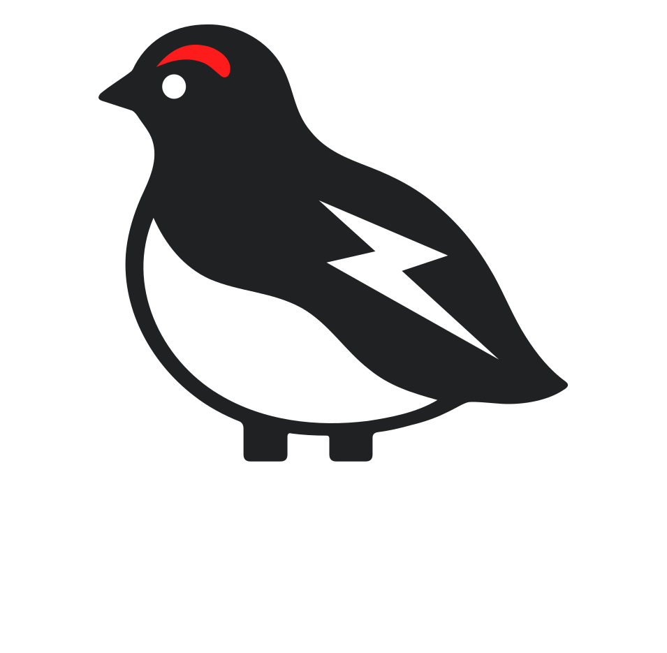
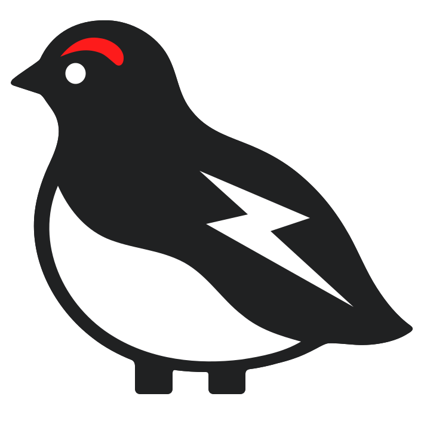
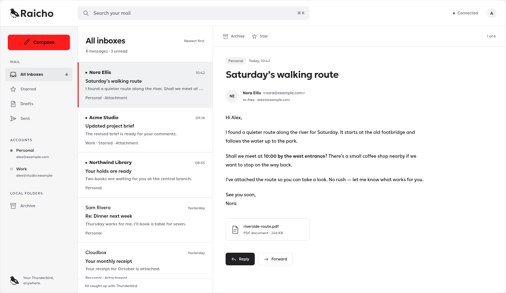
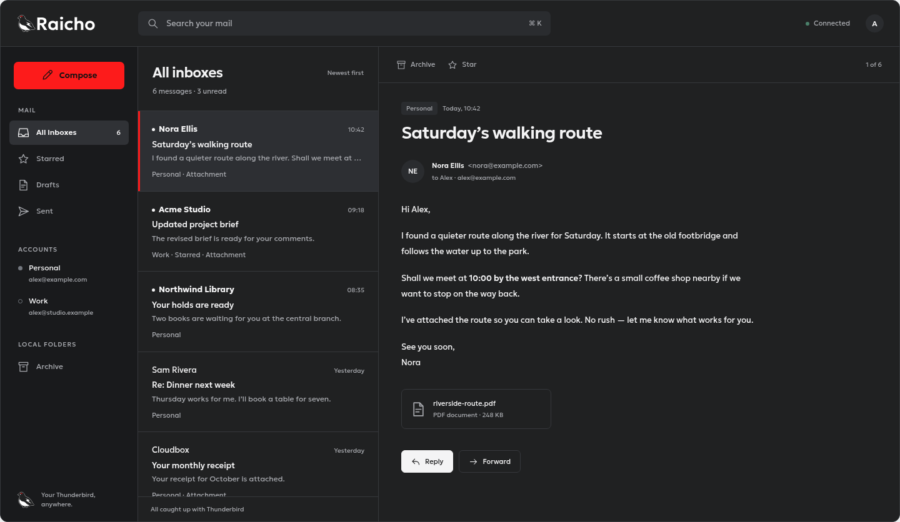

A familiar place for your mailYour Thunderbird,
Your Thunderbird,
anywhere.
A browser interface for Thunderbird.
The mail you know, in a new window.
 01 / Symbol
01 / Symbol 02 / Wordmark
02 / Wordmark03 / One color
The voice in the letterforms
Geologica
Open, rounded, and quietly distinctive.
Aa
Mail, made familiar.
ABCDEFGHIJKLMNOPQRSTUVWXYZ
abcdefghijklmnopqrstuvwxyz
0123456789 @ & ? !
abcdefghijklmnopqrstuvwxyz
0123456789 @ & ? !
Read comfortably.400 / BodyYour Thunderbird, anywhere.580 / Brand displayFind your focus.700 / Headings
A small, confident palette.
Four core colorsCharcoal#202122
Vermilion#FD1B1B
Snow#FFFFFF
Mist#D9DADD
Neutral surfaces carry the interface. Vermilion gives it a recognizable accent.
At home in your browser.
Interface concepts
Inbox — Raicho
 Inbox — Raicho
Inbox — Raicho